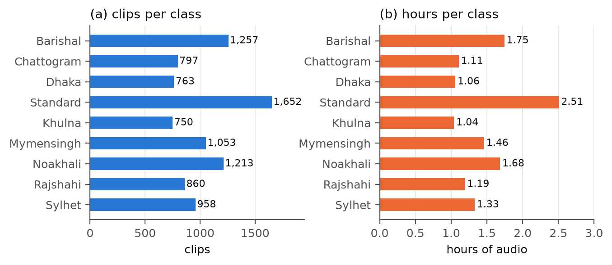
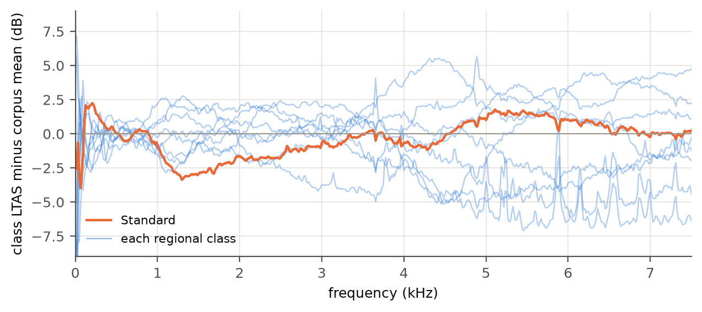
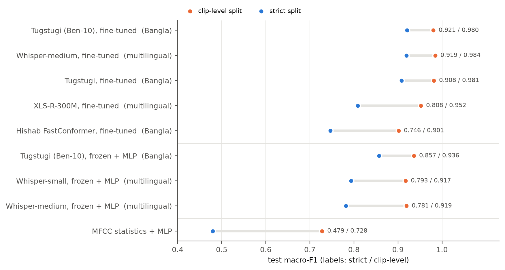
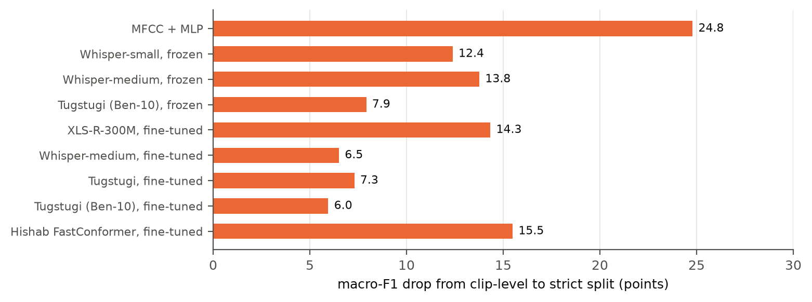
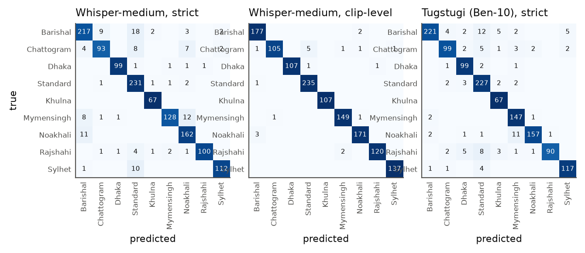
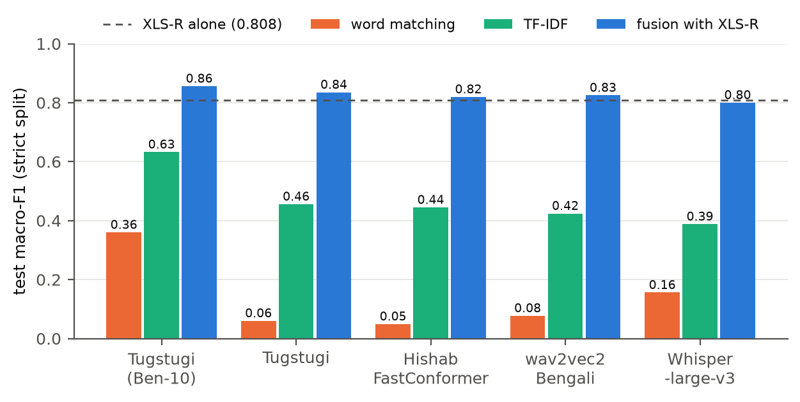
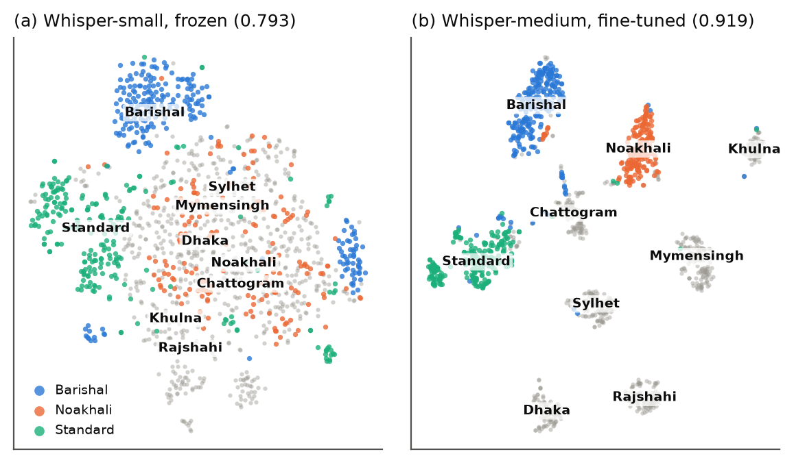

Bangla dialect identification from sound and from words
A listener knows in seconds. Is it the words, or the sound?

Cluster threshold calibrated on the 557 Standard clips with known sources (ARI 0.347). Zero groups cross the splits.
12 to 25 macro-F1 points were the recording, not the dialect.




Errors follow geography and the register boundary. Barishal’s strict test set is one 251-clip pseudo-speaker cluster, so its score is the noisiest.


Read speech comes out Standard by design; the model has not seen your microphone or room.
Limits: pseudo-speakers are estimates, not identities; some speakers are actors; Standard is a register, not a region; 5 s clips carry no discourse-level cues. Next: a speaker-labelled evaluation set such as RegSpeech12, and dialect-preserving ASR.
Code, splits, transcripts and per-clip predictions:
github.com/towfique-elahe/beyond-words
Key references
[1] A. Radford et al., “Robust speech recognition via large-scale weak supervision,” ICML 2023.